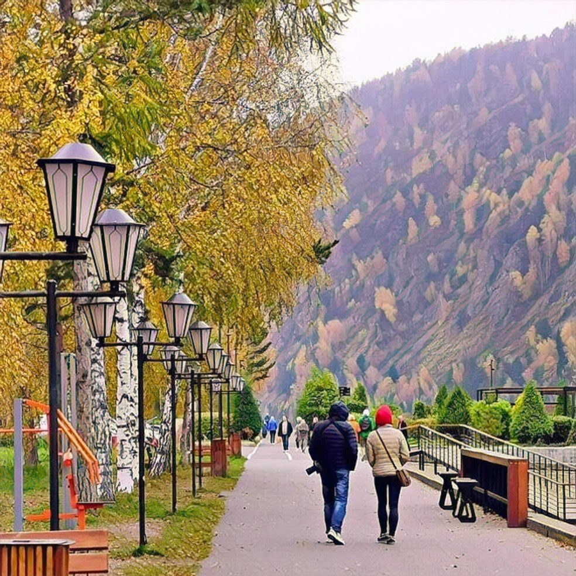

За последний месяц, в связи со своими лекциями по культурным кодам и российскому менталитету я наслушался столько всякого, что… Собственно, смотрю на информационное поле и волосы дыбом встают от этого «суицидального культурного парадокса». Шизофрения головного мозга.
В связи с этим вспомнил одну историю. Несколько лет назад ездил в Сибирь, в Красноярск. Ну и случайно попал в Дивногорск, небольшой город неподалёку, туда, где «Луна плыла среди небес, Без блеска, без лучей, Налево был угрюмый лес, Направо — Енисей». Иду по улице, глазею по сторонам… навстречу мужчина, пожилой интеллигентской наружности. Хватает меня за руку и спрашивает:
- Молодой человек, вы русский?
- Эээ… в каком смысле?
- Божечки мой! Ну, а какой ещё тут может быть смысл, кроме прямолинейной совокупности букв?
- Ну да, русский, - говорю.
- И как, позвольте поинтересоваться, ваш молодой организм самому себе это осознаёт?
- Выражаясь вашим языком - прямолинейной совокупностью фактов: язык, психика, история, территория.
- То есть, собственно, сам организм с его «цветом кожи и формой рожи», тут немножко совсем ни при чем?
- Ну, в общем-то, да.
- И то место, где мы с вами сейчас произносим беседу для вас таки имеет ценность?
- Да.
- И вы таки не местный?
- Опять да.
- Сонечка, - оборачиваясь назад, кому-то бросил старик, - вот видишь, я же тебе говорил, что эта земля всюду сама родит людей, которыми думает о себе.
Подходит миниатюрная симпатичная женщина в возрасте, приветливо мне кивает и одновременно укоризненно смотрит на моего нечаянного собеседника:
- Давид Яковлевич, опять ты за своё. Что подумает молодой человек за твою вопиющую бесцеремонность?
- Что-что… Если юноша может достойно сформулировать буквы в слова, значит он способен думать. А если он способен думать, значит нам всегда чуть-чуть есть о чем поговорить.
- Дава, ты неисправим, - поправляя на Давиде Яковлевиче шарф, произнесла (как оказалось) Софа Марковна и протянула мне конфету, - Вам, молодой человек, следует немедленно подкрепиться, раз уж вы попали в плен этого несносного старика.
Софа Марковна внимательно проследила за тем, чтобы я съел конфету, взяла под руку меня и Давида Яковлевича и повела нас в парк. Мы проговорили, наверное, часа полтора… говорили о разном, а прощаясь, Давид Маркович произнёс:
- То, что я еврей, таки не мешает мне быть русским. Потому что русский, это не кровь, это память земли о самой себе.

